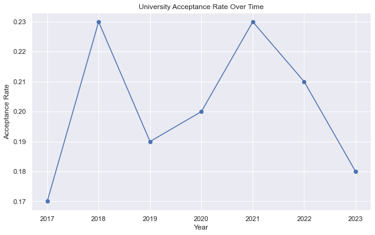
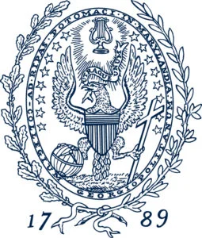
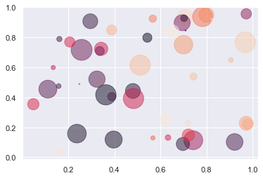

Component 5
Georgetown University
Core Values

Georgetown University is one of the world’s leading academic and research institutions, offering a unique educational experience that prepares the next generation of global citizens to lead and make a difference in the world. We are a vibrant community of exceptional students, faculty, alumni and professionals dedicated to real-world applications of our research, scholarship, faith and service.
Legacy
Established in 1789, Georgetown is the nation’s oldest Catholic and Jesuit university. Drawing upon the 450-year-old legacy of Jesuit education, we provide students with a world-class learning experience focused on educating the whole person through exposure to different faiths, cultures and beliefs.
Students are challenged to engage in the world and become people in the service of others, especially the most vulnerable and disadvantaged members of the community. These values are at the core of Georgetown’s identity, bringing together members of the community across diverse backgrounds.
Visual Identity of Georgetown
Visual Identity Guidelines
Our visual identity draws meaning from the past, but is also highly relevant for 21st century communications. It is intended to be responsive to the varied needs of those engaged in ongoing university dialogues. To that end, our guidelines are an important tool for those Georgetown University community members engaged in university communications—from designers and programmers to faculty and administrators. The guidelines permit and encourage communications professionals to support their respective school, department, office and/or center’s identity in a manner that is consistent with, and supportive of the university’s overarching positioning.
Typograpy
Adobe Caslon
Colors
Georgetown Blue
Pantone 282 C:100 M:68 Y:0 K:54 R:4 G:30 B:66 Hex: #041E42
Georgetown Gray
Cool Gray 10 C:62 M:53 Y:47 K:19 R:99 G:102 B:106 Hex: #63666A
Georgetown University Acceptance rate
Acceptance rate from 2017 to 2023.
Random Pretty Plot
Code
import numpy as np
import matplotlib.pyplot as plt
# Fixing random state for reproducibility
np.random.seed(19680801)
N = 50
x = np.random.rand(N)
y = np.random.rand(N)
colors = np.random.rand(N)
area = (30 * np.random.rand(N))**2 # 0 to 15 point radii
plt.scatter(x, y, s=area, c=colors, alpha=0.5)
plt.show()